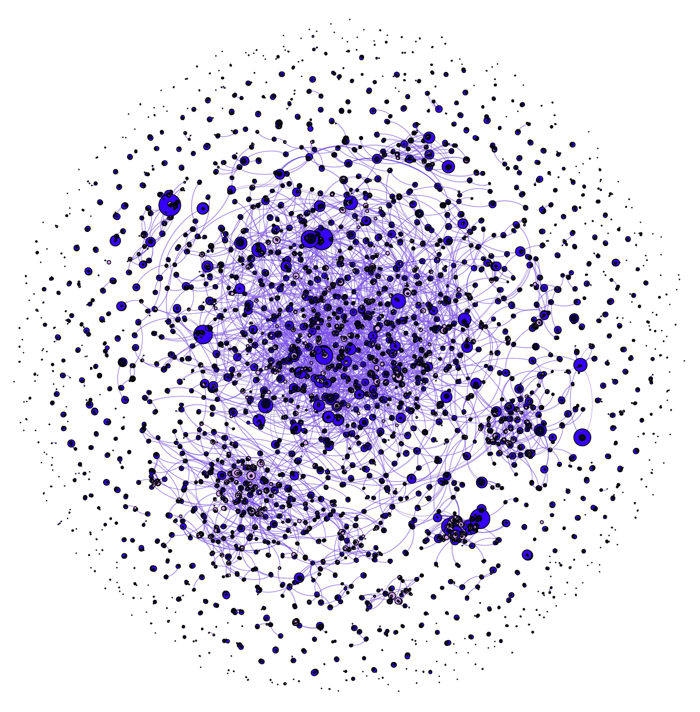

Last updated: 2021-05-12
Checks: 7 0
Knit directory: TidyTuesday/
This reproducible R Markdown analysis was created with workflowr (version 1.6.2). The Checks tab describes the reproducibility checks that were applied when the results were created. The Past versions tab lists the development history.
Great! Since the R Markdown file has been committed to the Git repository, you know the exact version of the code that produced these results.
Great job! The global environment was empty. Objects defined in the global environment can affect the analysis in your R Markdown file in unknown ways. For reproduciblity it’s best to always run the code in an empty environment.
The command set.seed(20210215) was run prior to running the code in the R Markdown file. Setting a seed ensures that any results that rely on randomness, e.g. subsampling or permutations, are reproducible.
Great job! Recording the operating system, R version, and package versions is critical for reproducibility.
Nice! There were no cached chunks for this analysis, so you can be confident that you successfully produced the results during this run.
Great job! Using relative paths to the files within your workflowr project makes it easier to run your code on other machines.
Great! You are using Git for version control. Tracking code development and connecting the code version to the results is critical for reproducibility.
The results in this page were generated with repository version d1ea663. See the Past versions tab to see a history of the changes made to the R Markdown and HTML files.
Note that you need to be careful to ensure that all relevant files for the analysis have been committed to Git prior to generating the results (you can use wflow_publish or wflow_git_commit). workflowr only checks the R Markdown file, but you know if there are other scripts or data files that it depends on. Below is the status of the Git repository when the results were generated:
Ignored files:
Ignored: .Rhistory
Ignored: .Rproj.user/
Untracked files:
Untracked: analysis/deforestation.Rmd
Untracked: output/5year.pdf
Untracked: output/Untitled.pdf
Untracked: output/edges.csv
Untracked: output/edges2.csv
Untracked: output/nodes.csv
Untracked: output/nodes2.csv
Untracked: output/test.gephi
Unstaged changes:
Modified: analysis/_site.yml
Modified: analysis/gender.Rmd
Note that any generated files, e.g. HTML, png, CSS, etc., are not included in this status report because it is ok for generated content to have uncommitted changes.
These are the previous versions of the repository in which changes were made to the R Markdown (analysis/netflix.Rmd) and HTML (docs/netflix.html) files. If you’ve configured a remote Git repository (see ?wflow_git_remote), click on the hyperlinks in the table below to view the files as they were in that past version.
| File | Version | Author | Date | Message |
|---|---|---|---|---|
| html | 1797758 | Nhi Hin | 2021-05-12 | Build site. |
| Rmd | 1200294 | Nhi Hin | 2021-05-12 | wflow_publish(“analysis/netflix.Rmd”) |
The dataset for this week’s TidyTuesday relates to Netflix shows/movies and their directors and cast. More info in the links below:
https://github.com/rfordatascience/tidytuesday/blob/master/data/2021/2021-04-20/readme.md
https://www.kaggle.com/shivamb/netflix-shows?select=netflix_titles.csv
From the Kaggle page, they have the following suggestions for exploring the data.
Inspiration
Some of the interesting questions (tasks) which can be performed on this dataset:
Understanding what content is available in different countries Identifying similar content by matching text-based features Network analysis of Actors / Directors and find interesting insights Is Netflix has increasingly focusing on TV rather than movies in recent years.
tuesdata <- tidytuesdayR::tt_load(2021, week = 17)--- Compiling #TidyTuesday Information for 2021-04-20 ------- There is 1 file available ------ Starting Download ---
Downloading file 1 of 1: `netflix_titles.csv`--- Download complete ---netflix_titles <- tuesdata$netflix
netflix_titles$release_year %>% unique() [1] 2020 2016 2011 2009 2008 2019 1997 2017 2018 2014 2015 2010 2005 2013 2012
[16] 2006 2000 2003 1989 2004 1977 1971 1993 2007 1998 1988 1996 2002 1986 1990
[31] 1979 1980 1974 2001 1999 1966 1991 1982 1994 1995 1978 1992 1972 1975 2021
[46] 1973 1967 1960 1981 1958 1976 1968 1956 1985 1965 1984 1983 1987 1945 1946
[61] 1962 1925 1942 1969 1955 1963 1964 1954 1970 1944 1947 1959 1943netflix_titles %<>%
dplyr::filter(release_year %in% c(2017, 2018, 2019, 2020, 2021))separate_rows in future.)netflix_titles_long <- netflix_titles %>%
dplyr::select(show_id, title, director, cast)%>%
dplyr::filter(!is.na(director)) %>%
rowwise() %>%
dplyr::mutate(cast = cast %>% strsplit(., split = ", ")) %>%
tidyr::unnest_longer(col = cast) %>%
ungroup()
head(netflix_titles_long)# A tibble: 6 x 4
show_id title director cast
<chr> <chr> <chr> <chr>
1 s7 122 Yasir Al Yasiri Amina Khalil
2 s7 122 Yasir Al Yasiri Ahmed Dawood
3 s7 122 Yasir Al Yasiri Tarek Lotfy
4 s7 122 Yasir Al Yasiri Ahmed El Fishawy
5 s7 122 Yasir Al Yasiri Mahmoud Hijazi
6 s7 122 Yasir Al Yasiri Jihane Khalil From the long version of the data, we can prepare node and edge tables which can then be imported into Gephi for visualisation.
Note: igraph is also apparently good for network visualisation within R but I have not used it yet! Will come back to try to reimplement in igraph another time.
The intention is to make a heterogenous/mixed network where we want the nodes to represent: ID of movie, director, cast. This means that each of these will be a row in the nodes table.
I will also join the movie titles on there as well in case we need them for visualisation purposes later.
nodes <- data.frame(
Id = c(unique(netflix_titles_long$show_id),
unique(netflix_titles_long$director),
unique(netflix_titles_long$cast))
) %>%
dplyr::mutate(NodeType = c(rep("Show", length(unique(netflix_titles_long$show_id))),
rep("Director", length(unique(netflix_titles_long$director))),
rep("Cast", length(unique(netflix_titles_long$cast)))
)) %>%
left_join(netflix_titles_long[, c("show_id", "title")],
by = c("Id"="show_id")) %>%
dplyr::rename(Label = title) %>%
dplyr::distinct(Id, Label, .keep_all=TRUE) %>%
dplyr::mutate(Label = gsub(x = Label, pattern = "#", replacement = "")) %>%
dplyr::filter(!is.na(Id))The edges represent connections, in this case, we will plot the following edges on the network:
The structure of the edges table should include the Source and Target columns for import into Gephi.
showIdToDirector <- netflix_titles_long %>%
dplyr::select(show_id, director) %>%
dplyr::distinct(show_id, director) %>%
set_colnames(c("Source", "Target"))
showIdToCast <- netflix_titles_long %>%
dplyr::select(show_id, cast) %>%
dplyr::distinct(show_id, cast) %>%
set_colnames(c("Source", "Target"))
directorToCast <- netflix_titles_long %>%
dplyr::select(director, cast) %>%
dplyr::distinct(director, cast) %>%
set_colnames(c("Source", "Target"))
edges <- bind_rows(showIdToDirector,
showIdToCast,
directorToCast) %>%
dplyr::filter(!is.na(Source), !is.na(Target))nodes %>% readr::write_csv(here("output", "nodes2.csv"))
edges %>% readr::write_csv(here("output", "edges2.csv"))This has essentially been adapted from this tutorial: http://www.martingrandjean.ch/gephi-introduction/
Import both the nodes and edges tables into Gephi using File > Import Spreadsheet.
In the importing options, I set the graph as being undirected and chose to merge both spreadsheets into a new workspace.
I set colours according to the NodeType column we made in the nodes table, and size according to Degree (i.e. number of nodes that each node is connected to).
For laying out the graph, I applied “Random Layout”, followed by “Force Atlas 2” (initial layout), and “Yifan Hu” to increase the visual separation of the nodes a bit more.
The final result!

sessionInfo()R version 4.0.3 (2020-10-10)
Platform: x86_64-apple-darwin17.0 (64-bit)
Running under: macOS Mojave 10.14.6
Matrix products: default
BLAS: /Library/Frameworks/R.framework/Versions/4.0/Resources/lib/libRblas.dylib
LAPACK: /Library/Frameworks/R.framework/Versions/4.0/Resources/lib/libRlapack.dylib
locale:
[1] en_AU.UTF-8/en_AU.UTF-8/en_AU.UTF-8/C/en_AU.UTF-8/en_AU.UTF-8
attached base packages:
[1] stats graphics grDevices utils datasets methods base
other attached packages:
[1] here_1.0.1 purrr_0.3.4 tidyr_1.1.2 magrittr_2.0.1
[5] dplyr_1.0.4 workflowr_1.6.2
loaded via a namespace (and not attached):
[1] Rcpp_1.0.6 cellranger_1.1.0 pillar_1.4.7 compiler_4.0.3
[5] later_1.1.0.1 git2r_0.28.0 tools_4.0.3 digest_0.6.27
[9] jsonlite_1.7.2 lubridate_1.7.9.2 evaluate_0.14 lifecycle_0.2.0
[13] tibble_3.0.6 pkgconfig_2.0.3 rlang_0.4.10 cli_2.3.0
[17] rstudioapi_0.13 curl_4.3 yaml_2.2.1 xfun_0.21
[21] xml2_1.3.2 stringr_1.4.0 tidytuesdayR_1.0.1 httr_1.4.2
[25] knitr_1.31 hms_1.0.0 generics_0.1.0 fs_1.5.0
[29] vctrs_0.3.6 rprojroot_2.0.2 tidyselect_1.1.0 glue_1.4.2
[33] R6_2.5.0 fansi_0.4.2 readxl_1.3.1 rmarkdown_2.6
[37] selectr_0.4-2 readr_1.4.0 whisker_0.4 usethis_2.0.1
[41] promises_1.1.1 ellipsis_0.3.1 htmltools_0.5.1.1 assertthat_0.2.1
[45] rvest_0.3.6 httpuv_1.5.5 utf8_1.1.4 stringi_1.5.3
[49] crayon_1.4.1